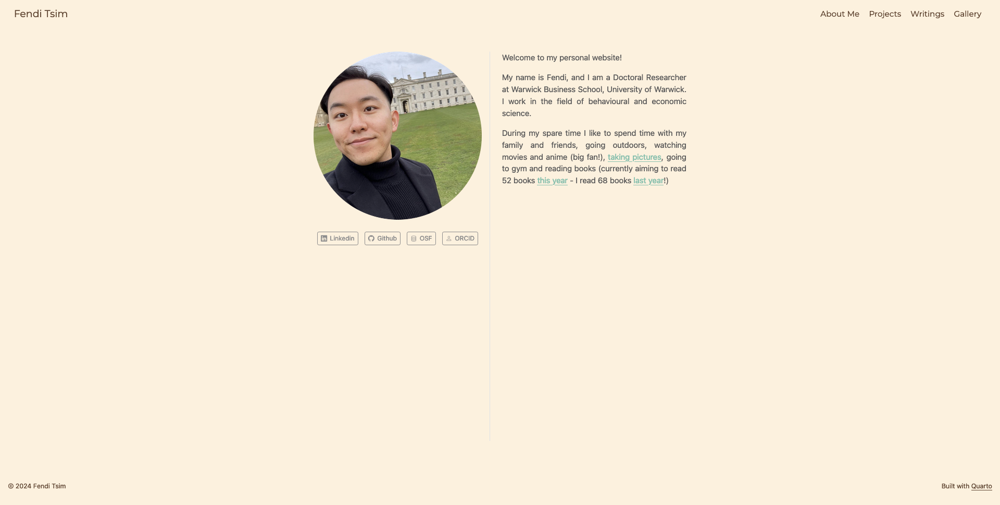

Creating a personal website with Quarto
Having a personal website is ubiquitous and essential these days for professional use. In this project, I am going to share my experience with, creating a personal website with Quarto and R.
This project is suitable for beginners who have a little, no prior experience. A few criteria must be met for a beginner to create a personal website:
Easy to program: markdown preferably
Easily accessible when programming it
Having a few templates to play around with, with the possibility to expand with other programming language for designing website such as html, css and js
What is Quarto?
To begin with, it is better for me to give you a brief introduction of what Quarto is. Essentially, it is an open-source software for creating website, document (including LaTeX) as well as presentation slides. Quarto supports multiple programming languages such as Python, R, Julia and Observable JS. In this project we use Quarto with R, as it is pre-installed inside RStudio!
Why Quarto?
Additionally, my general impression with Quarto is easy to learn for beginners! It’s based on rmarkdown - so we might not need to know html and css before publishing a website at all!
What do we need?
To start with, we need the following:
Working inside R’s environment is super-convenient! For instance, we can store every bit of the website inside a R’s project, which can be stored in a cloud.
In fact, we simply take the advantage of R and RStudio, rather than coding with R. Quarto is pre-installed inside RStudio, so we do not need to install it from an official website (which, of course, you can do so if you want)
- Github account created and Git installed
After creating a personal website with Quarto, we need a server, or a place to deploy it! Github is, in my opinion, an excellent option for deploying a website. First, it is easy to deploy a site. Secondly, we can upload our code there, and access it anywhere we want, as long as we have the internet! Third, we can deploy as many websites as we want for free - this is tempting!
Here I do not provide how to create a website with Quarto - Quarto itself has a fantastic and user-friendly documentation to follow!
Tips
Render on Save
On your index.qmd document tab, there is a checkbox called ‘Render on Save’ - tick it and the website will be rendered whenever you save your current progress!
Install Quarto on your device
This simplifies our experience when we try to render, preview and publish our website. If we want to render our current progress, we can run the following command in terminal (next to Console tab in RStudio):
quarto renderOnce our website is rendered, we can preview it with our default browser by running the command in terminal:
quarto previewApart from rendering and previewing our website, we can publish it via Terminal (see below)!
Creating multiple pages
Of course, we would like to have multiple pages for showcasing different contents, rather than a single page about ourselves in our website! Creating another page within our website by simply adding another quarto document is basic. Yet, this creates a problem in the website address. For example, we create an About page with a quarto document about.qmd. After we click that page in our website, the website address ends with ‘about.html’.
I was inspired by this lovely website built with Quarto for resolving this issue, we can create a folder called ‘About’, and rename that quarto document from about.qmd to index.qmd (Remember to update the relevant href link inside _quarto.yml, such as about/index.qmd!). The new website address ends with /about/ - looks prettier and more advanced!
Uploading your site on Github
After creating a personal website with Quarto, we need a server, or a place to deploy it! First, we open Terminal tab inside RStudio. We run the following command to check if RStudio connects to our Github repository properly:
git remote show originIf the link shown does not match with our Github repository’s, we can remove it with the following command:
git remote remove originThen we add our Github repository’s link, and run the previous command again for a second check.
For uploading the website, I’d recommend taking the quarto publish approach. Follow steps on this site if you have not created a gh-pages branch in your Github repository.
You might want to update your personal website with new content occasionally. First, make sure you are going to make changes of your website in main branch (it should be the name of your default branch) by running the following command in Terminal:
git checkout mainUpload all your recent changes of your website in R.proj into your github repository (main branch). This ensures your Github repository is up-to-date, and thus you can pick it up with another machine if needed.
Next, in the Terminal tab (which is next to Console tab), type the following command to update your website:
quarto publish gh-pagesR then asks if you’d like to update your personal website, and type ‘Y’. It then automatically ‘publish’ the latest version of your page.
It’s alright if you ignore the first step and do the second step only. However, only ‘gh-pages’ branch is then up-to-date (with an automatic committed message like ‘Built site for gh-pages’) - it would be better to make sure your main branch is also up-to-date, too!
What’s next?
Congratulations! You’ve created your personal website with Quarto! A few here and there you can customize in your website, such as:
Adding a favicon
Changing foreground and background color for the navigation bar and body
Adding a page footer
Modifying html format options
Modifying your resume with Quarto’s built-in templates
Creating a blog within your website!
Have fun creating your website!
